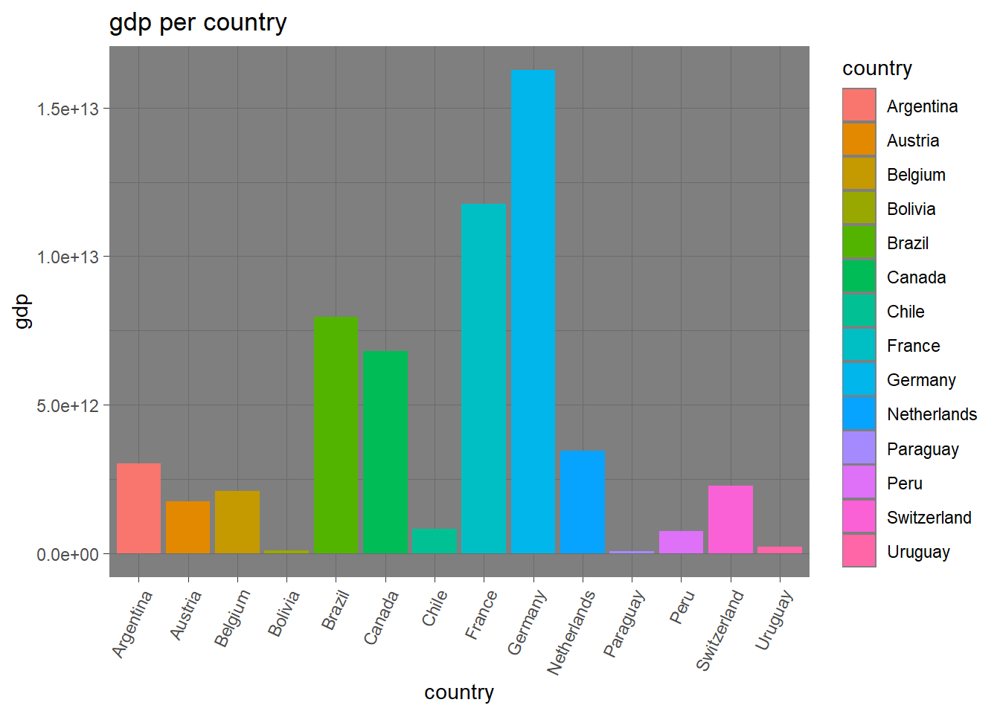

Chapter 7 connecting and using an external database
In this chapter I am going to show I used a external database (DBeaver) to store and process files. For this chapter we use the gapminder data of the dslabs package and the data from google about flu and dengue searches per country.
7.1 data processing and DBeaver
The data for this report was downloaded from (google?) and the gapminder from the dslabs package in R. The data was downloaded into Rsudio and checked. the data was changed so it was compatible between the different dataframes
firstly we load the flu dengue data from the repo and the gapminder data into data frames. the searches data contains a header which is needed to be skip.
we change the data from the flu and dengue data so it works with the gapminder data we do this by combining the data of the “Date” into “years”
## `summarise()` has grouped output by 'country'. You
## can override using the `.groups` argument.
## `summarise()` has grouped output by 'country'. You
## can override using the `.groups` argument.the data was saved into csv and rds files
write.csv(Flu_data_tidy , "C:/Users/Dell/Documents/Rschool/dsfb2_workflows_portfolio/portfolio_opdracht7/Flu_data_tidy.csv" , row.names = FALSE)
write.csv(dengue_data_tidy ,"C:/Users/Dell/Documents/Rschool/dsfb2_workflows_portfolio/portfolio_opdracht7/dengue_data_tidy.csv" ,row.names = FALSE)
write.csv(gapminder ,"C:/Users/Dell/Documents/Rschool/dsfb2_workflows_portfolio/portfolio_opdracht7/gapminder_data_tidy.csv" , row.names = FALSE)
write_rds(Flu_data_tidy , "C:/Users/Dell/Documents/Rschool/dsfb2_workflows_portfolio/portfolio_opdracht7/Flu_data_tidy.rds")
write_rds(dengue_data_tidy ,"C:/Users/Dell/Documents/Rschool/dsfb2_workflows_portfolio/portfolio_opdracht7/dengue_data_tidy.rds")
write_rds(gapminder ,"C:/Users/Dell/Documents/Rschool/dsfb2_workflows_portfolio/portfolio_opdracht7/gapminder_data_tidy.rds")Next we are going to connect to the server and save the data there we use DBeaver for this.
To save the data the database DBeaver was used
library(RPostgreSQL)
library(devtools)
library(remotes)
library(RPostgres)
library(DBI)
dbWriteTable(con, "flu_data", Flu_data_tidy)
dbWriteTable(con, "dengue_data", dengue_data_tidy)
dbWriteTable(con, "gap_data", gapminder , overwrite = TRUE)After Saving the data, the SQL commands in DBeaver were used to check the new tables After we have saved the data into the data base we can see out newly made databases in DBeaver we can check t contents of these dataframes with SQL code in dBeaver
The SQL commands in R studio were used to create a new table that included the gap, flu and dengue data.

joined flu dengue and gap data
7.2 results
The average amount of flu searches in 2013 was 1.9229923^{4} (r summary(filter(all_data, year == 2013 )flu_searches)[4] )
the amount of dengue searches in the same year was 8.8201(summary(filter(all_data, year == 2013 )dengue_searches)[4])
To see which countries searched flue the most first it would be interesting to see which country searches flu and dengue the most to make this more even we will be looking at the amount of searches per 100 citizens the dengue searches were lower and we need look for searches per 1.000.000 citizens.
all_data <- dbReadTable(con, "all_data")all_data_2 <- all_data[, c(1:7, 10 , 11)]
all_data_2 <- pivot_longer(all_data_2, cols = -c(country , year), values_to = "values" , names_to = "variable")
filter(all_data , flu_searches > 0) %>% filter(country == "Austria" | country == "Bulgaria" | country == "Canada") %>% ggplot( aes(x = year , y = (flu_searches/population)*1000 , group = country , colour = country, label = country)) +geom_point() + geom_line() + labs(y = "amount of flu searches per 1000") Austria searched flu the most
filter(all_data , dengue_searches > 0) %>% ggplot( aes(x = year , y = (dengue_searches/population)*10000000, group = country , colour = country)) +geom_point() + geom_line() + labs(y = "amount of dengue searches per 10.000.000")Singappore searches dengue the most
filter(all_data , flu_searches > 0 & gdp > 0) %>% ggplot( aes(x = region , y = (flu_searches/population)*100, group = country , fill = region)) + geom_col() + labs(y = "amount of flu_serches") + theme(axis.text.x=element_text(angle = 45, hjust = 0.75)) + labs(title = "flu searches per continent" , y = "flu searches per continent (divided for population)")
flu was mostly searched in Europa and america